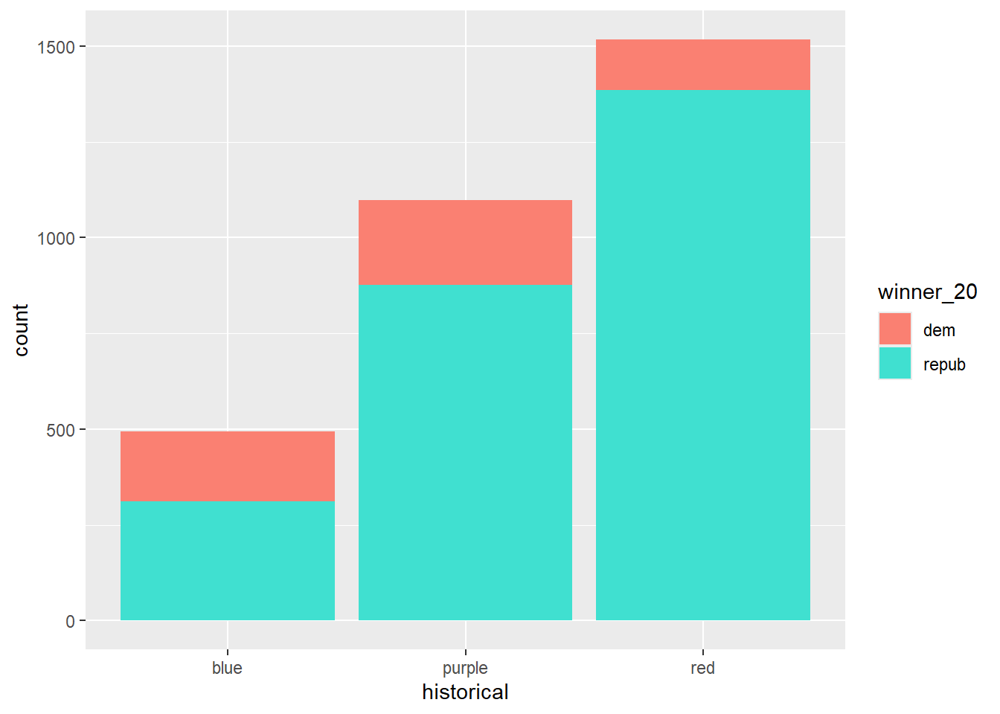
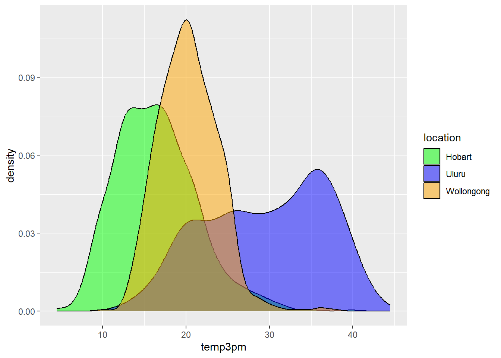

Github user Tony McGovern has compiled and made available 2020/2016/2012 presidential election results for most of 3000+ U.S. counties, except Alaska. (Image: Wikimedia Commons)
A wrangled version of this data, is imported below, after being combined with:
2013 county-level demographics from the df_county_demographics data set from the choroplethr R package
`stat_bin()` using `bins = 30`. Pick better value with `binwidth`.
Exercise 1: Quantitative vs Quantitative Intuition Check
Be Quick
Don’t spend more than 3 minutes on this!
Below is a scatterplot of the Republican support in 2020 vs 2016. Notice that:
both variables are quantitative, and get their own axes
the response variable is on the y-axis, demonstrating how repub_pct_20 might be predicted by repub_pct_16, not vice versa
Try to replicate this using ggplot(). THINK:
What info do you need to set up the canvas?
What geometric layer (geom_???) might add these dots / points for each county? We haven’t learned this yet, just take some guesses.
ggplot(elections, aes(x = repub_pct_20, y = repub_pct_16)) +geom_point()
Exercise 2: 2 Quantitiative Variables
Run each chunk below to build up a a scatterplot of repub_pct_20 vs repub_pct_16 with different glyphs representing each county. Address or think about any prompts in the comments (#).
# Set up the plotting frame# How does this differ than the frame for our histogram of repub_pct_20 alone?# There are two axis.ggplot(elections, aes(y = repub_pct_20, x = repub_pct_16))
# Add a layer of points for each county# Take note of the geom!ggplot(elections, aes(y = repub_pct_20, x = repub_pct_16)) +geom_point()
# Change the shape of the points# What happens if you change the shape to another number?# Wow it changes what the points look like!ggplot(elections, aes(y = repub_pct_20, x = repub_pct_16)) +geom_point(shape =3)
# YOU TRY: Modify the code to make the points "orange"# NOTE: Try to anticipate if "color" or "fill" will be useful here. Then try both.ggplot(elections, aes(y = repub_pct_20, x = repub_pct_16)) +geom_point(color ="orange")
# Add a layer that represents each county by the state it's in# Take note of the geom and the info it needs to run!# It needs state abbreviationsggplot(elections, aes(y = repub_pct_20, x = repub_pct_16)) +geom_text(aes(label = state_abbr))
Exercise 3: Reflect
Summarize the relationship between the Republican support in 2020 and 2016. Be sure to comment on:
the strength of the relationship (weak/moderate/strong) Very strong relationship
the direction of the relationship (positive/negative) Positive direction
outliers (in what state do counties deviate from the national trend? Any ideas why this might be the case?) *Most outliers are from Texas, this may have happened because Texas has swung more conservative in recent times.
Exercise 4: Visualizing trend
The trend of the relationship between repub_pct_20 and repub_pct_16 is clearly positive and (mostly) linear. We can highlight this trend by adding a model “smooth” to the plot:
ggplot(elections, aes(y = repub_pct_20, x = repub_pct_16)) +geom_point() +geom_smooth()
Part a
Construct a new plot that contains the model smooth but does not include the individual point glyphs.
ggplot(elections, aes(x = repub_pct_16, y = repub_pct_20)) +geom_smooth()
`geom_smooth()` using method = 'gam' and formula = 'y ~ s(x, bs = "cs")'
Part b
By default, geom_smooth() adds a smooth, localized model line. To examine the “best” linear model, we can specify method = "lm". It’s pretty similar in this example!
ggplot(elections, aes(y = repub_pct_20, x = repub_pct_16)) +geom_point() +geom_smooth(method ="lm")
Exercise 5: Your Turn
To examine how the 2020 results are related to some county demographics, construct scatterplots of repub_pct_20 vs median_rent, and repub_pct_20 vs median_age. Summarize the relationship between these two variables and comment on which is the better predictor of repub_pct_20, median_rent or median_age.
# Scatterplot of repub_pct_20 vs median_rentggplot(elections, aes(x = median_rent, y = repub_pct_20)) +geom_point()
# Scatterplot of repub_pct_20 vs median_ageggplot(elections, aes(x = median_age, y = repub_pct_20)) +geom_point()
Exercise 6: A Sad Scatterplot
Next, let’s explore the relationship between a county’s 2020 Republican support repub_pct_20 and the historical political trends in its state. In this case repub_pct_20 is quantitative, but historical is categorical. Explain why a scatterplot might not be an effective visualization for exploring this relationship. (What questions does / doesn’t it help answer?)
Scatterplots are best for comparing quantitative data
ggplot(elections, aes(y = repub_pct_20, x = historical)) +geom_point()
Exercise 7: Quantitative vs Categorical – Violins & Boxes
Though the above scatterplot did group the counties by historical category, it’s nearly impossible to pick out meaningful patterns in 2020 Republican support in each category. Let’s try adding 2 different geom layers to the frame:
Box plots are constructed from five numbers - the minimum, 25th percentile, median, 75th percentile, and maximum value of a quantitative variable:
REFLECT:
Summarize what you’ve learned about the 2020 Republican county-level support within and between red/purple/blue states.
*In blue states, republican usually win about ~55% of the counties, compared to ~75% of the counties in red states. In purple states, they usually win ~65%
Exercise 8: Quantitative vs Categorical – Intuition Check
Be Quick
Don’t spend more than 3 minutes on this!
We can also visualize the relationship between repub_pct_20 and historical using our familiar density plots. In the plot below, notice that we simply created a separate density plot for each historical category. (The plot itself is “bad” but we’ll fix it below.) Try to adjust the code chunk below, which starts with a density plot of repub_pct_20 alone, to re-create this image.
Exercise 9: Quantitative vs Categorical – Density Plots
Work through the chunks below and address the comments therein.
# Name two "bad" things about this plot# *colors do not align, and you can't see what is covered up by red and purple*ggplot(elections, aes(x = repub_pct_20, fill = historical)) +geom_density()
# What does scale_fill_manual do?# *It gives you the correct colors*ggplot(elections, aes(x = repub_pct_20, fill = historical)) +geom_density() +scale_fill_manual(values =c("blue", "purple", "red"))
# What does alpha = 0.5 do?# Play around with different values of alpha, between 0 and 1# *It changes the opacity*ggplot(elections, aes(x = repub_pct_20, fill = historical)) +geom_density(alpha =0.5) +scale_fill_manual(values =c("blue", "purple", "red"))
# What does facet_wrap do?!# *It seperates the historical groups*ggplot(elections, aes(x = repub_pct_20, fill = historical)) +geom_density() +scale_fill_manual(values =c("blue", "purple", "red")) +facet_wrap(~ historical)
# Let's try a similar grouping strategy with a histogram instead of density plot.# Why is this terrible?# *Its hard to read, because the values are stacked on top of each other*ggplot(elections, aes(x = repub_pct_20, fill = historical)) +geom_histogram(color ="white") +scale_fill_manual(values =c("blue", "purple", "red"))
Exercise 10
We’ve now learned 3 (of many) ways to visualize the relationship between a quantitative and categorical variable: side-by-side violins, boxplots, and density plots.
Which do you like best? The density plots
What is one pro of density plots relative to boxplots? Density plots are easier to read, especially for people unfamiliar with statistics
What is one con of density plots relative to boxplots? They don’t display as accurate imformation as boxplots (median and quartiles)
Exercise 11: Categorical vs Categorical – Intuition Check
Finally, let’s simply explore who won each county in 2020 (winner_20) and how this breaks down by historical voting trends in the state. That is, let’s explore the relationship between 2 categorical variables! Following the same themes as above, we can utilize grouping features such as fill/color or facets to distinguish between different categories of winner_20 and historical.
Be Quick
Spend at most 5 minutes on the following intuition check. Adjust the code below to recreate the following two plots.
# Plot 1: adjust this to recreate the top plotggplot(elections, aes(x = historical, fill = winner_20)) +geom_bar() +scale_fill_manual(values =c("salmon", "turquoise"))

# Plot 2: adjust this to recreate the bottom plotggplot(elections, aes(x = winner_20)) +geom_bar() +facet_wrap(~ historical)
Exercise 12: Categorical vs Categorical
Construct the following 4 bar plot visualizations.
# A stacked bar plot# How are the "historical" and "winner_20" variables mapped to the plot, i.e. what roles do they play?# *historical is categorical, and winner_20 fills out those categories with info.ggplot(elections, aes(x = historical, fill = winner_20)) +geom_bar()
# A faceted bar plotggplot(elections, aes(x = winner_20)) +geom_bar() +facet_wrap(~ historical)
# A side-by-side bar plot# Note the new argument to geom_barggplot(elections, aes(x = historical, fill = winner_20)) +geom_bar(position ="dodge")
# A proportional bar plot# Note the new argument to geom_barggplot(elections, aes(x = historical, fill = winner_20)) +geom_bar(position ="fill")
Part a
Name one pro and one con of using the “proportional bar plot” instead of one of the other three options.
Its easier to see proportions, and understand changes over time.
Part b
What’s your favorite bar plot from part and why? I really like the proportional bar plot, because it places proportions in higher importance as count, as count isn’t necessarily important in this visualization.
Exercise 13: Practice (now or later)
Decide
Decide what’s best for you:
Try this extra practice now.
Reflect on the above exercises and come back to this extra practice later (but before the next class).
Import some daily weather data from a few locations in Australia:
Construct plots that address the research questions in each chunk. You might make multiple plots–there are many ways to do things!. However, don’t just throw spaghetti at the wall.
Reflect before doing anything. What types of variables are these? How might you plot just 1 of the variables, and then tweak the plot to incorporate the other?
# How do 3pm temperatures (temp3pm) differ by location?ggplot(weather, aes(x = temp3pm, fill = location)) +geom_density(alpha =0.5) +scale_fill_manual(values =c("green", "blue", "orange"))
Warning: Removed 19 rows containing non-finite outside the scale range
(`stat_density()`).

# How might we predict the 3pm temperature (temp3pm) by the 9am temperature (temp9am)?# *Use the line of best fit as a prediction tool!*ggplot(weather, aes(x = temp9am, y = temp3pm)) +geom_point() +geom_smooth(method ="lm")
`geom_smooth()` using formula = 'y ~ x'
Warning: Removed 27 rows containing non-finite outside the scale range
(`stat_smooth()`).
Warning: Removed 27 rows containing missing values or values outside the scale range
(`geom_point()`).
# How do the number of rainy days (raintoday) differ by location?ggplot(weather, aes(x = raintoday)) +geom_bar() +facet_wrap(~ location)
7.2 Exercises (optional)
The above visualizations are foundational and important. But they’re not the only way to visualize the variables in our dataset.
Optional Exercise 1: Many Categories
Suppose we wanted to better understand how the 2020 Republican support varied from county to county within each state. Since repub_pct_20 is quantitative and state_abbr is categorical, we could make a density plot of repub_pct_20 for each state. Reflect on why this is bad.
ggplot(elections, aes(x = repub_pct_20, fill = state_abbr)) +geom_density(alpha =0.5)
Warning: Groups with fewer than two data points have been dropped.
Warning in max(ids, na.rm = TRUE): no non-missing arguments to max; returning
-Inf
Warning: Groups with fewer than two data points have been dropped.
Warning in max(ids, na.rm = TRUE): no non-missing arguments to max; returning
-Inf
When we want to compare the distribution of some quantitative outcome among many groups / categories, a ridgeline plot can be a good option. These are also called joy plots, named after the album cover for “Unknown Pleasures” by Joy Division. (Look it up!) To make a ridgeline plot, we can use the geom_density_ridges() function from the ggridges package.
# Install ggridges packagelibrary(ggridges)# Make our first joy plot# THINK: What DON'T you like about this?ggplot(elections, aes(x = repub_pct_20, y = state_abbr)) +geom_density_ridges()
# Let's put the states in order by Republican support, not alphabet# How do you think fct_reorder works? We'll learn about this later in the semester.ggplot(elections, aes(x = repub_pct_20, y =fct_reorder(state_abbr, repub_pct_20))) +geom_density_ridges(alpha =0.5)
# YOUR TURN: color/fill the ridges according to a state's historical voting patterns # and add meaningful axis labels
Follow-up questions
Which states tend to have the most variability in outcomes from county to county? The least?
What other interesting patterns do you notice?
Does this plot prompt any other questions?
Optional Exercise 2: Total Outcomes by State
Let’s import some new data and counts up the total votes (Republican and Democratic) by state, not county. This was wrangled from the elections data!
For example, we might make a scatterplot of the 2020 vs 2016 outcomes:
ggplot(elections_by_state, aes(y = repub_pct_20, x = repub_pct_16)) +geom_point()
BUT this isn’t the easiest way to communicate or identify the changes from 1 year to the next.
# YOU TRY# Start by creating a "scatterplot" of state_abbr (y-axis) by 2020 Republican support on the x-axis# Color the points red# Scroll to solutions below when you're ready
# Check it outggplot(elections_by_state, aes(x = repub_pct_20, y = state_abbr)) +geom_point(color ="red")
# YOU TRY# Reorder the states in terms of their 2020 Republican support (not alphabet)# Scroll to solutions below when you're ready
# Check it outggplot(elections_by_state, aes(x = repub_pct_20, y =fct_reorder(state_abbr, repub_pct_20))) +geom_point(color ="red")
# Finally, add ANOTHER layer of points for the 2016 outcomes# What info does this new geom_point() layer need to run?ggplot(elections_by_state, aes(x = repub_pct_20, y =fct_reorder(state_abbr, repub_pct_20))) +geom_point(color ="red") +geom_point(aes(x = repub_pct_16, y = state_abbr))
Reflect on the following
What do you think this plot needs? Try it! You might need to do some digging online.
Summarize the main takeaways from the plots. Which states changed the most from 2016 to 2020? The least? Where did the Republican support increase? Where did it decrease?
What other questions are you left with?
Source Code
---title: "Bivariate Viz"---## Exercises (required)[Github user Tony McGovern](https://github.com/tonmcg/US_County_Level_Election_Results_08-20) has compiled and made available 2020/2016/2012 presidential election results for most of 3000+ U.S. counties, except Alaska. (Image: [Wikimedia Commons](https://commons.wikimedia.org/wiki/File:Map_of_USA_with_county_outlines_(black_%26_white).png))A wrangled version of this data, is imported below, after being combined with:- 2013 county-level demographics from the `df_county_demographics` data set from the `choroplethr` R package- historical voting trends in the state in which the county falls (from <https://www.270towin.com/content/blue-and-red-states>): - red = consistently Republican - blue = consistently Democratic - purple = something in between```{r}# Load dataelections <-read.csv("https://mac-stat.github.io/data/election_2020_county.csv")# Check it outhead(elections)```We'll use this data to explore voting outcomes within the U.S.'s 2-party system. Here's a list of candidates by year:| year | Republican candidate | Democratic candidate ||:-----|:---------------------|:---------------------|| 2020 | Donald Trump | Joe Biden || 2016 | Donald Trump | Hillary Clinton || 2012 | Mitt Romney | Barack Obama |### Exercise 0: Review {.unnumbered}#### Part a {.unnumbered}How many, or roughly what percent, of the 3000+ counties did the Republican candidate win in 2020?- Take a guess. *70%*- Then make a plot of the `winner` variable.- Then discuss what follow-up questions you might have (and that our data might help us answer).*What would the population graph look like?```{r message=FALSE}# Load the packagelibrary(tidyverse)``````{r eval = FALSE}ggplot(elections, aes(x = winner_20)) + geom_bar()```#### Part b {.unnumbered}The `repub_pct_20` variable provides more detail about the Republican support in each county. Construct a plot of `repub_pct_20`.Notice that the distribution of Republican support from county to county is slightly **left skewed** or **negatively skewed**.What follow-up questions do you have?```{r}ggplot(elections, aes(x = repub_pct_20)) +geom_histogram()```### Exercise 1: Quantitative vs Quantitative Intuition Check {.unnumbered}::: {.callout-important title="Be Quick"}Don't spend more than 3 minutes on this! :::Below is a **scatterplot** of the Republican support in 2020 vs 2016. Notice that:- both variables are quantitative, and get their own axes- the *response* variable is on the y-axis, demonstrating how `repub_pct_20` might be predicted by `repub_pct_16`, not vice versaTry to replicate this using `ggplot()`. THINK:- What info do you need to set up the canvas?- What geometric layer (`geom_???`) might add these dots / points for each county? We haven't learned this yet, just take some guesses.{width="50%"}```{r}ggplot(elections, aes(x = repub_pct_20, y = repub_pct_16)) +geom_point()```### Exercise 2: 2 Quantitiative Variables {.unnumbered}Run each chunk below to build up a a scatterplot of `repub_pct_20` vs `repub_pct_16` with different *glyphs* representing each county. Address or think about any prompts in the comments (`#`).```{r eval = FALSE}# Set up the plotting frame# How does this differ than the frame for our histogram of repub_pct_20 alone?# There are two axis.ggplot(elections, aes(y = repub_pct_20, x = repub_pct_16))``````{r eval = FALSE}# Add a layer of points for each county# Take note of the geom!ggplot(elections, aes(y = repub_pct_20, x = repub_pct_16)) + geom_point()``````{r eval = FALSE}# Change the shape of the points# What happens if you change the shape to another number?# Wow it changes what the points look like!ggplot(elections, aes(y = repub_pct_20, x = repub_pct_16)) + geom_point(shape = 3)``````{r}# YOU TRY: Modify the code to make the points "orange"# NOTE: Try to anticipate if "color" or "fill" will be useful here. Then try both.ggplot(elections, aes(y = repub_pct_20, x = repub_pct_16)) +geom_point(color ="orange")``````{r eval = FALSE}# Add a layer that represents each county by the state it's in# Take note of the geom and the info it needs to run!# It needs state abbreviationsggplot(elections, aes(y = repub_pct_20, x = repub_pct_16)) + geom_text(aes(label = state_abbr))```### Exercise 3: Reflect {.unnumbered}Summarize the relationship between the Republican support in 2020 and 2016. Be sure to comment on:- the strength of the relationship (weak/moderate/strong)\ *Very strong relationship*- the direction of the relationship (positive/negative)\ *Positive direction*- outliers (in what state do counties deviate from the national trend? Any ideas why this might be the case?) *Most outliers are from Texas, this may have happened because Texas has swung more conservative in recent times.### Exercise 4: Visualizing trend {.unnumbered}The trend of the relationship between `repub_pct_20` and `repub_pct_16` is clearly positive and (mostly) linear. We can highlight this trend by adding a model "smooth" to the plot:```{r eval = FALSE}ggplot(elections, aes(y = repub_pct_20, x = repub_pct_16)) + geom_point() + geom_smooth()```#### Part a {.unnumbered}Construct a new plot that contains the model smooth but does *not* include the individual point glyphs.```{r}ggplot(elections, aes(x = repub_pct_16, y = repub_pct_20)) +geom_smooth()```#### Part b {.unnumbered}By default, `geom_smooth()` adds a smooth, localized model line. To examine the "best" *linear model*, we can specify `method = "lm"`. It's pretty similar in this example!```{r eval = FALSE}ggplot(elections, aes(y = repub_pct_20, x = repub_pct_16)) + geom_point() + geom_smooth(method = "lm")```### Exercise 5: Your Turn {.unnumbered}To examine how the 2020 results are related to some county demographics, construct scatterplots of `repub_pct_20` vs `median_rent`, and `repub_pct_20` vs `median_age`. Summarize the relationship between these two variables and comment on which is the better predictor of `repub_pct_20`, `median_rent` or `median_age`.```{r}# Scatterplot of repub_pct_20 vs median_rentggplot(elections, aes(x = median_rent, y = repub_pct_20)) +geom_point()# Scatterplot of repub_pct_20 vs median_ageggplot(elections, aes(x = median_age, y = repub_pct_20)) +geom_point()```### Exercise 6: A Sad Scatterplot {.unnumbered}Next, let's explore the relationship between a county's 2020 Republican support `repub_pct_20` and the `historical` political trends in its state. In this case `repub_pct_20` is **quantitative**, but `historical` is **categorical**. Explain why a scatterplot might *not* be an effective visualization for exploring this relationship. (What questions does / doesn't it help answer?)*Scatterplots are best for comparing quantitative data*```{r}ggplot(elections, aes(y = repub_pct_20, x = historical)) +geom_point()```### Exercise 7: Quantitative vs Categorical -- Violins & Boxes {.unnumbered}Though the above scatterplot *did* group the counties by `historical` category, it's nearly impossible to pick out meaningful patterns in 2020 Republican support in each category. Let's try adding 2 different `geom` layers to the frame:```{r eval = FALSE}# Side-by-side violin plotsggplot(elections, aes(y = repub_pct_20, x = historical)) + geom_violin()``````{r eval = FALSE}# Side-by-side boxplots (defined below)ggplot(elections, aes(y = repub_pct_20, x = historical)) + geom_boxplot()```Box plots are constructed from five numbers - the minimum, 25th percentile, median, 75th percentile, and maximum value of a quantitative variable:{width="50%"}**REFLECT:**Summarize what you've learned about the 2020 Republican county-level support within and between red/purple/blue states.*In blue states, republican usually win about ~55% of the counties, compared to ~75% of the counties in red states. In purple states, they usually win ~65%### Exercise 8: Quantitative vs Categorical -- Intuition Check {.unnumbered}::: {.callout-important title="Be Quick"}Don't spend more than 3 minutes on this! :::We can also visualize the relationship between `repub_pct_20` and `historical` using our familiar density plots. In the plot below, notice that we simply created a separate density plot for each `historical` category. (The plot itself is "bad" but we'll fix it below.) Try to adjust the code chunk below, which starts with a density plot of `repub_pct_20` alone, to re-create this image.{width="50%"}```{r}ggplot(elections, aes(x = repub_pct_20)) +geom_density()```### Exercise 9: Quantitative vs Categorical -- Density Plots {.unnumbered}Work through the chunks below and address the comments therein.```{r eval = FALSE}# Name two "bad" things about this plot# *colors do not align, and you can't see what is covered up by red and purple*ggplot(elections, aes(x = repub_pct_20, fill = historical)) + geom_density()``````{r eval = FALSE}# What does scale_fill_manual do?# *It gives you the correct colors*ggplot(elections, aes(x = repub_pct_20, fill = historical)) + geom_density() + scale_fill_manual(values = c("blue", "purple", "red"))``````{r eval = FALSE}# What does alpha = 0.5 do?# Play around with different values of alpha, between 0 and 1# *It changes the opacity*ggplot(elections, aes(x = repub_pct_20, fill = historical)) + geom_density(alpha = 0.5) + scale_fill_manual(values = c("blue", "purple", "red"))``````{r eval = FALSE}# What does facet_wrap do?!# *It seperates the historical groups*ggplot(elections, aes(x = repub_pct_20, fill = historical)) + geom_density() + scale_fill_manual(values = c("blue", "purple", "red")) + facet_wrap(~ historical)``````{r eval = FALSE}# Let's try a similar grouping strategy with a histogram instead of density plot.# Why is this terrible?# *Its hard to read, because the values are stacked on top of each other*ggplot(elections, aes(x = repub_pct_20, fill = historical)) + geom_histogram(color = "white") + scale_fill_manual(values = c("blue", "purple", "red"))```### Exercise 10 {.unnumbered}We've now learned 3 (of many) ways to visualize the relationship between a quantitative and categorical variable: side-by-side violins, boxplots, and density plots.- Which do you like best? *The density plots*- What is one pro of density plots relative to boxplots? *Density plots are easier to read, especially for people unfamiliar with statistics*- What is one con of density plots relative to boxplots? *They don't display as accurate imformation as boxplots (median and quartiles)*### Exercise 11: Categorical vs Categorical -- Intuition Check {.unnumbered}Finally, let's simply explore who *won* each county in 2020 (`winner_20`) and how this breaks down by `historical` voting trends in the state. That is, let's explore the relationship between 2 categorical variables! Following the same themes as above, we can utilize grouping features such as fill/color or facets to distinguish between different categories of `winner_20` and `historical`.::: {.callout-important title="Be Quick"}Spend at most 5 minutes on the following intuition check. Adjust the code below to recreate the following two plots.:::{width="60%"}```{r}# Plot 1: adjust this to recreate the top plotggplot(elections, aes(x = historical, fill = winner_20)) +geom_bar() +scale_fill_manual(values =c("salmon", "turquoise"))``````{r}# Plot 2: adjust this to recreate the bottom plotggplot(elections, aes(x = winner_20)) +geom_bar() +facet_wrap(~ historical)```### Exercise 12: Categorical vs Categorical {.unnumbered}Construct the following 4 bar plot visualizations.```{r eval = FALSE}# A stacked bar plot# How are the "historical" and "winner_20" variables mapped to the plot, i.e. what roles do they play?# *historical is categorical, and winner_20 fills out those categories with info.ggplot(elections, aes(x = historical, fill = winner_20)) + geom_bar()``````{r eval = FALSE}# A faceted bar plotggplot(elections, aes(x = winner_20)) + geom_bar() + facet_wrap(~ historical)``````{r eval = FALSE}# A side-by-side bar plot# Note the new argument to geom_barggplot(elections, aes(x = historical, fill = winner_20)) + geom_bar(position = "dodge")``````{r eval = FALSE}# A proportional bar plot# Note the new argument to geom_barggplot(elections, aes(x = historical, fill = winner_20)) + geom_bar(position = "fill")```#### Part a {.unnumbered}Name one pro and one con of using the "proportional bar plot" instead of one of the other three options.*Its easier to see proportions, and understand changes over time.*#### Part b {.unnumbered}What's your favorite bar plot from part and why?*I really like the proportional bar plot, because it places proportions in higher importance as count, as count isn't necessarily important in this visualization.*### Exercise 13: Practice (now or later) {.unnumbered}::: {.callout-important title="Decide"}Decide what's best for you:- Try this extra practice now.- Reflect on the above exercises and come back to this extra practice later (but before the next class).:::Import some daily weather data from a few locations in Australia:```{r}weather <-read.csv("https://mac-stat.github.io/data/weather_3_locations.csv")```Construct plots that address the research questions in each chunk. You might make multiple plots--there are many ways to do things!. However, don't just throw spaghetti at the wall.Reflect before doing anything. What types of variables are these? How might you plot just 1 of the variables, and then tweak the plot to incorporate the other?```{r}# How do 3pm temperatures (temp3pm) differ by location?ggplot(weather, aes(x = temp3pm, fill = location)) +geom_density(alpha =0.5) +scale_fill_manual(values =c("green", "blue", "orange"))``````{r}# How might we predict the 3pm temperature (temp3pm) by the 9am temperature (temp9am)?# *Use the line of best fit as a prediction tool!*ggplot(weather, aes(x = temp9am, y = temp3pm)) +geom_point() +geom_smooth(method ="lm")``````{r}# How do the number of rainy days (raintoday) differ by location?ggplot(weather, aes(x = raintoday)) +geom_bar() +facet_wrap(~ location)```## Exercises (optional)The above visualizations are foundational and important. But they're not the only way to visualize the variables in our dataset.### Optional Exercise 1: Many Categories {.unnumbered}Suppose we wanted to better understand how the 2020 Republican support varied from county to county within each **state**. Since `repub_pct_20` is quantitative and `state_abbr` is categorical, we *could* make a density plot of `repub_pct_20` for each state. Reflect on why this is bad.```{r}ggplot(elections, aes(x = repub_pct_20, fill = state_abbr)) +geom_density(alpha =0.5)```A facet wrap would also be bad!```{r fig.width = 8, fig.height = 8}ggplot(elections, aes(x = repub_pct_20)) + geom_density(alpha = 0.5) + facet_wrap(~ state_abbr)```When we want to compare the distribution of some quantitative outcome among *many* groups / categories, a **ridgeline plot** can be a good option. These are also called **joy plots**, named after the album cover for "Unknown Pleasures" by Joy Division. (Look it up!) To make a ridgeline plot, we can use the `geom_density_ridges()` function from the `ggridges` package.```{r fig.height = 10, fig.width = 8, eval = FALSE}# Install ggridges packagelibrary(ggridges)# Make our first joy plot# THINK: What DON'T you like about this?ggplot(elections, aes(x = repub_pct_20, y = state_abbr)) + geom_density_ridges()``````{r fig.height = 10, fig.width = 8, eval = FALSE}# Let's put the states in order by Republican support, not alphabet# How do you think fct_reorder works? We'll learn about this later in the semester.ggplot(elections, aes(x = repub_pct_20, y = fct_reorder(state_abbr, repub_pct_20))) + geom_density_ridges(alpha = 0.5)``````{r fig.height = 10, fig.width = 8}# YOUR TURN: color/fill the ridges according to a state's historical voting patterns # and add meaningful axis labels```**Follow-up questions**- Which states tend to have the most variability in outcomes from county to county? The least?- What other interesting patterns do you notice?- Does this plot prompt any other questions?### Optional Exercise 2: Total Outcomes by State {.unnumbered}Let's import some new data and counts up the total votes (Republican and Democratic) by state, not county. This was **wrangled** from the elections data!```{r}elections_by_state <-read.csv("https://mac-stat.github.io/data/election_2020_by_state.csv")```For example, we might make a scatterplot of the 2020 vs 2016 outcomes:```{r}ggplot(elections_by_state, aes(y = repub_pct_20, x = repub_pct_16)) +geom_point()```BUT this isn't the easiest way to communicate or identify the changes from 1 year to the next.```{r fig.height = 10, fig.width = 8}# YOU TRY# Start by creating a "scatterplot" of state_abbr (y-axis) by 2020 Republican support on the x-axis# Color the points red# Scroll to solutions below when you're ready``````{r fig.height = 10, fig.width = 8}# Check it outggplot(elections_by_state, aes(x = repub_pct_20, y = state_abbr)) + geom_point(color = "red")``````{r fig.height = 10, fig.width = 8}# YOU TRY# Reorder the states in terms of their 2020 Republican support (not alphabet)# Scroll to solutions below when you're ready``````{r fig.height = 10, fig.width = 8}# Check it outggplot(elections_by_state, aes(x = repub_pct_20, y = fct_reorder(state_abbr, repub_pct_20))) + geom_point(color = "red")``````{r fig.height = 10, fig.width = 8}# Finally, add ANOTHER layer of points for the 2016 outcomes# What info does this new geom_point() layer need to run?ggplot(elections_by_state, aes(x = repub_pct_20, y = fct_reorder(state_abbr, repub_pct_20))) + geom_point(color = "red") + geom_point(aes(x = repub_pct_16, y = state_abbr))```**Reflect on the following**- What do you think this plot needs? Try it! You might need to do some digging online.- Summarize the main takeaways from the plots. Which states changed the most from 2016 to 2020? The least? Where did the Republican support increase? Where did it decrease?- What other questions are you left with?


.png){kind=link}